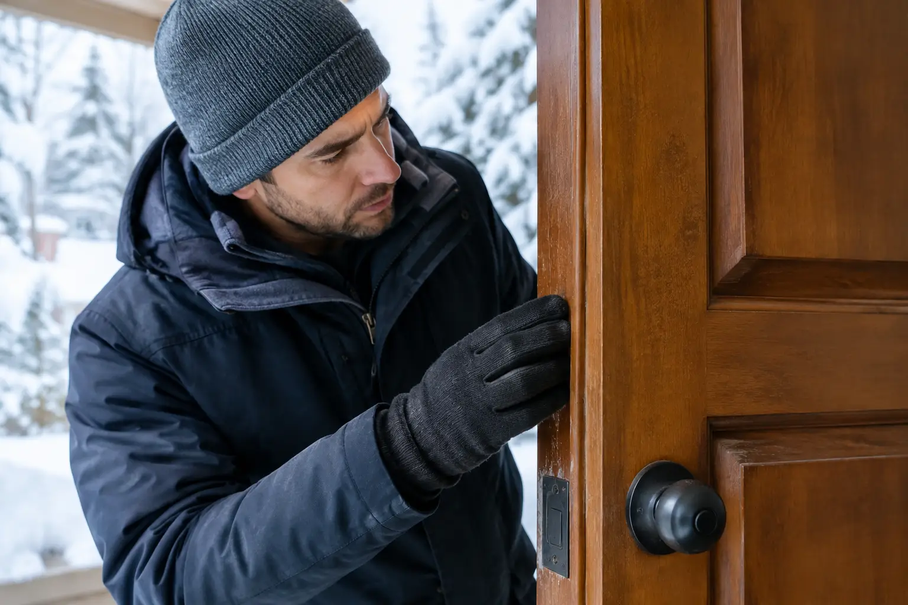

Why Is Your Door Sticking in Winter?
By Vitalii Nestorenko · October 6, 2026 · 7 min read
A door sticking in winter is one of those small problems that can quickly become a daily frustration. You pull harder, the latch scrapes, paint marks appear on the frame, and before long someone is shouldering the door closed. Calgary’s cold, dry weather and sudden temperature swings can affect doors, frames, hardware, and the house around them. The right fix depends on where the door is binding and why.
Before sanding an edge or forcing a hinge, take a minute to identify the pattern. A simple adjustment often solves the problem. But if the door has shifted because of moisture, foundation movement, or a failing exterior seal, treating the symptom alone can create a bigger repair later.
Why a Door Sticks in Cold Weather
Winter does not always make a door itself expand. In many Calgary homes, dry indoor air can cause wood doors to shrink slightly, while changing temperatures affect the frame, weatherstripping, and hardware. Exterior doors are particularly vulnerable because one side faces freezing temperatures while the other sits in heated indoor air.
The most common cause is a door that is no longer sitting squarely in its frame. Repeated opening and closing can loosen hinge screws. A heavy solid-core or exterior door may gradually sag, causing the top or latch side to rub. Seasonal movement in the house can also shift the frame just enough to make a previously smooth door catch.
Weatherstripping is another frequent culprit. It may become stiff in the cold, shift out of place, or press too tightly against the door. This is common after new weatherstripping has been installed with good intentions but without checking the door’s full swing and latch operation.
For exterior doors, ice, packed snow, dirt, or a swollen threshold can interfere at the bottom. If the door sticks only after a freeze-thaw cycle, look closely at the sill and sweep before assuming the door needs to be trimmed.
Find Where the Door Is Rubbing
Do not start by removing material from the door. First, inspect the contact point. Open and close the door slowly while watching the gaps around all four sides. A consistent narrow gap is a good sign. A gap that disappears at one corner tells you where the alignment has changed.
A piece of paper can help. Close the door on the paper at several points around the frame and gently pull it out. If it drags heavily or tears at one location, that area may be compressed. You can also look for fresh scuff marks on the door edge, frame, threshold, or weatherstripping.
Pay attention to when the problem happens. A door that sticks only when latching may have an issue at the strike plate. A door that catches before it reaches the latch is more likely rubbing at the frame, threshold, or seals. A door that is hard to open but closes normally could have a binding hinge or a deadbolt that is misaligned.
Start With the Safest Fixes
Tighten and Check the Hinges
Loose hinge screws are a common and inexpensive fix. With the door open, check each screw in both the door and the frame. Tighten them by hand until snug. Avoid overtightening, especially on older wood frames where a stripped screw hole can make the problem worse.
If a top hinge screw spins without tightening, it may no longer be gripping solid wood. A longer screw installed through the hinge into the wall framing can often pull the door back into position. This should be done carefully. A screw that is too long, installed at an angle, or driven too aggressively can split trim or pull the frame out of alignment.
After tightening, test the door several times. If the latch side has lifted slightly and the rubbing disappears, you have likely found the cause.
Inspect the Strike Plate
If the door closes but requires a hard push or lift to latch, inspect the strike plate on the frame. The latch bolt may be hitting the top, bottom, or side of the opening instead of entering it cleanly.
Sometimes the fix is as simple as tightening the strike plate screws. In other cases, the plate needs a small adjustment. Moving it too far can weaken the screw holes or create a poor seal at the weatherstripping, so small changes are best. For an exterior door, the deadbolt should also slide smoothly into its opening without forcing the door up, down, or sideways.
Check Weatherstripping and the Door Sweep
A good exterior seal keeps drafts out, but it should not make the door difficult to use. Look for weatherstripping that is folded, detached, brittle, or overly compressed. If the door suddenly started sticking after a new seal was added, the material may be too thick or placed incorrectly.
At the bottom of the door, check for ice, gravel, leaves, or a damaged sweep dragging across the threshold. Clean the sill thoroughly and let it dry. If the sweep is torn or hanging low, it may need replacement or adjustment rather than trimming the door.
Do not use petroleum-based products on rubber weatherstripping unless the manufacturer specifically allows it. Some products can soften or damage the material and leave residue that attracts dirt.
When Sanding or Planing Makes Sense
Sanding or planing can be the right repair, but it should be the last step after alignment and seal issues have been checked. Removing wood is permanent. If the door is only sticking because of a loose hinge or winter weatherstripping, shaving the edge may leave an oversized gap once conditions change.
It makes sense to remove material when the door has a clear, repeatable rub point, the hinges and frame are secure, and there is evidence of long-term contact. This is more common with painted wood doors than insulated steel or fibreglass doors.
The amount removed should be minimal. After sanding, the exposed edge needs to be sealed and painted or finished properly, especially on an exterior door. Bare wood can absorb moisture, swell, and create the same problem again. Planing near hinges, locks, or weather seals also requires care so the door’s fit, security, and insulation are not compromised.
Watch for Signs of a Bigger Problem
A sticking door is occasionally the first visible clue that the frame or structure has moved. That does not automatically mean a serious issue, but it does mean the repair should be assessed rather than rushed.
Look more closely if multiple doors suddenly stick, new cracks appear in drywall near door openings, floors feel uneven, or gaps around windows and trim have changed. An exterior door that sticks alongside visible water damage, soft wood, or a draft around the frame may have a moisture or installation issue.
Renters should document the problem and notify the landlord or property manager, particularly when the door is an exterior entry, balcony door, or required exit. A door that cannot be opened easily from inside is a safety concern. Landlords should address it promptly to prevent tenant lockouts, security issues, and damage to the frame from repeated forcing.
Avoid These Quick Fixes
Forcing a sticking door can bend hinges, split jambs, damage the latch, and turn a small adjustment into a replacement job. Avoid kicking the bottom of the door, using excessive shoulder pressure, or repeatedly slamming it into the frame.
Be cautious with lubricants as well. A dry hinge may benefit from a suitable hinge lubricant, but lubricant will not correct a sagging door or misaligned strike plate. Spraying oil into a latch or lock can collect dust and create a sticky mechanism over time. If the lock is the issue, use a product intended for locks and follow its directions.
Also avoid trimming the door on a cold day simply because it feels tight. Check the hinges, threshold, and weatherstripping first. Seasonal conditions can change, while a door that has been cut too small will stay too small.
Get the Door Working Properly Again
A door should open, close, latch, and lock without a fight. For busy homeowners, a proper adjustment is usually faster and more affordable than living with the problem until the trim, lock, or frame is damaged. It is especially worth addressing before a cold snap makes an exterior entry difficult to secure.
Nestor’s Home Help can assess the cause, adjust hinges and strike plates, repair minor frame issues, replace worn weatherstripping, and leave the work area clean. If the door needs more than a simple adjustment, you will know what is happening before unnecessary work begins.
A sticking door is rarely something you need to tolerate all winter. A careful inspection and the right small repair can make every trip in and out of the house feel normal again.
Vitalii Nestorenko is the owner of Nestor's Home Help, a licensed and insured handyman business in Calgary. He holds a Master's degree in mechanical engineering and does every job himself.